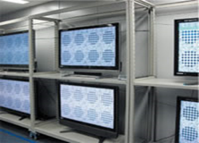
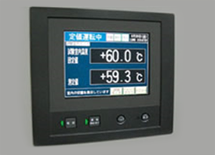
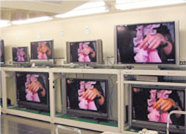
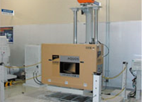

液晶電視-四原色技術
液晶電視-四原色技術 液晶電視-技術
液晶電視-技術 液晶電視-環境
液晶電視-環境 液晶電視-工廠
液晶電視-工廠 液晶電視-歷史
液晶電視-歷史液晶電視-工廠
AQUOS品質的產出、堺﹑龜山工廠的高品質維持管理系統
生產AQUOS液晶電視的日本龜山工廠，是世界上唯一從液晶面板到整台液晶電視組裝的一貫生產工廠。
在生產過程方面，不論是面板或是製品兩方面，都實施非常嚴格的品質檢查制度，這是為了讓消費者能夠長久且安全的使用液晶電視，信賴的AQUOS液晶電視就此產生。
液晶面板長期信賴性測試
每天八小時不斷播放影片，藉此來觀測檢查液晶面板的變化。
不只是對現行面板的檢查，連以前的面板也做持續做檢測。也因為如此累積了相當龐大的技術經驗與資料。

液晶面板溫度環境、熱衝擊測試
長時間從 ＋60℃到 －10℃的運轉測試以及在相對溼度90%的情況下動作檢測等，實施這種環境嚴苛的種種測試。

製品壽命測試
不僅僅是現行龜山工廠生產的液晶電視，連同以前的代表機種也一起在「高溫」、「低溫」、「高溼度」的實驗室裏，長時間不斷連續播放影片，藉此來測試產品的信賴性。

製品震動、掉落測試
假想完成品在移動過程中，歷經各種不同大小的震動測試，以及由各種不同角度掉落至地面的測試，藉此來管理本體、內裝、外包裝之永久性。

面板粉塵測試
將數十個僅micro大小的粉塵吹向液晶面板，確認粉塵是否有侵入液晶面板的內部。
面板靜電測試
對液晶面板釋放數千伏特高壓靜電，確認面板的規格與性能。
面板光學特性測試
檢測液晶面板的特性如亮度、色彩、可視角度等。